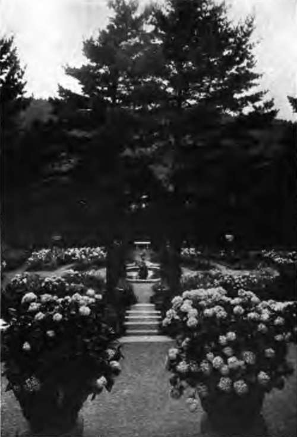

Chapter XVI. The Making Of Flower Pictures
Description
This section is from the book "Flower Gardening", by H. S. Adams. Also available from Amazon: Flower gardening.
Chapter XVI. The Making Of Flower Pictures
There is a particularly appealing sentence in Miss Jekyll's "Colour in Flower Gardens." This reads: "It seems to me that the duty we owe to our gardens and to our own bettering in our gardens is so to use the plants that they shall form beautiful pictures." Her ideal is "gardening that may rightly claim to rank as a fine art".
No garden ideal could be finer. Unfortunately none is more difficult of attainment, in the complete sense that Miss Jekyll has in mind. In gardens, as elsewhere, "art is long," but likewise "time is fleeting"듮here are other things to do. Most must be content with shooting the arrow high, the while they take a grain of comfort in the thought that though they will inevitably fail to reach the mark they will have something, and be the better, for the striving.
So these "beautiful pictures," even if.for long they may exist only as insubstantial visions, ought to be the inspiration of the humblest as well as the grandest of garden schemes. While not essential, save to the highly sensitized nature, they do put a keener edge on the pleasure to be derived from "the adaptation of things in the natural world to the uses of life"듮o quote one definition of art.
Art, by the way, need not be taken so seriously as to make the pursuit of it in the garden at once a worry and a despair. If it seems too much of a bugbear think of it "as the application of skill to the production of the beautiful by imitation or design," and let it go at that. With good taste and imagination, perhaps with only common sense, you will arrive at a sufficiently artistic goal.
Garden pictures have the same beginning as paintings on canvas듞omposition, always with the idea of adapting nature rather than merely imitating it. Form, which may not overlook so simple a thing as a flower stem; foreground and background are all prominent factors in this. color, when taken to mean the hue of blossoms, is non-essential; it may be left out altogether. But color does not signify that, despite loose usage of the word; else would garden pictures be but patchwork quilts. It is made up of foliage as well, and of sky, rocks, buildings and everything entering into foreground and background.
Pictures, of course, may be set down anywhere: again and again this is done with wholly satisfying results. But what makes the pains really worth while is to create these pictures precisely where they ought to be등hich is determined by the natural, or potential, advantages of a certain spot. To illustrate; there is no law against planting larkspur and madonna lilies together on a border and callng the group a blue and white picture much worse things than that happen in gardens every year. It is far better, however, first to reach the conclusion that a certain spot demands fairly tall plants, which well define themselves. These will, you feel, be more effective if there are two kinds,- of not only unequal height but marked difference in the shape of the blossoms and the way they are carried on the stems.
"What makes the pains really tvorth while is to create these pictures precisely where they ought to be등hich is determined by the natural, or potential, advantages of a certain spot".
Then let personal preference step in and go as far as it likes듞onsistently. If larkspur and madonna lilies are your choice, plant them. But remember that blue and white are not the everything of color in your picture; the lily foliage is a delicate green, that of the larkspur darker. And you must have brought other colors into your background듫erhaps a sky that from dawn to sunset is everchanging. Whether a picture is the whole garden or a particular grouping in it, or an isolated spot on the home grounds, matters very little; the main thing is to have as many pictures as the circumstances warrant. For this is not all of the growing of flowers; it is merely the supreme incident.
A garden may be made a well composed picture at all times of the year, but that would mean either being a veritable slave to it to the end of life or expending an amount of money that most gardeners for pleasure could not afford. Even then there would very likely come intervals of imperfection sorely to try a soul now grown somewhat finicky, if not intolerant*
Rather than set one's self about a task little short of superhuman, the wiser part is to make the most modest of beginnings and let art, to say .nothing of labor, grow with experience.
A simple way is to compose a picture of the gar den entrance and the vista through it. This entrance, say, is defined by two slim but shapely evergreens of moderate height. The path almost immediately divides in twain, to form a large bed, beyond which is a line of shrubbery. A rather bold massing, with an edging, is thought of for the bed. Many combinations there are; but take foxgloves and Canterbury bells. White of the one and pink of the ether will do, with green in the distance. Here are the main features of an extremely simple and uncomplicated garden picture.
It is a June picture, but easily made one of a series of half a dozen or so from spring to autumn according to the time one cares to give to planning and planting. And it does not interfere with the creation of any number of pictures inside the garden ; they may come along later, or not at all.
In the garden itself pictures are most easily made by taking the angle where two paths separate, or the end of one, and working out an effect. Very frequently one kind of plant is sufficient and usually two are enough; but there can be no set rule as to that.
Simple pictures may be made by planting a rose at the side of the front door in the old-fashioned way; with a rambler on a porch, arch or gateway; with a woodbine on a juniper or a wistaria on a pine; with a nearly submerged boulder and a patch of Phlox subulata and so on to the end of a chapter, limited in length only by failure to see glorious opportunities.
And there are innumerable lesser opportunities. A little patch of the old Campanula rapunculoides or Sedum spectabile close against the gray stones of the foundation of a house makes a picture as charming in its way as many of the more pretentious ones. Again, a small colony of foam flower (Tia-rella cordifolia), or bloodroot, or white violet, in the shade of a shrub, with brown twigs above it and brown earth around, is no less delectable. Do not despise the brown things든ven some scattered leaves of the garden's winter blanket. Nor fail to use the least of material; three purple crocus blooms and their grass-like foliage, and only the soil for a background, will make a miniature at any rate.
So far the pictures spoken of have been seasonal 들n evidence at this or that time of year and then gone until another twelve months shall have come around. These present the minimum of difficulty and are therefore the best for the beginner. But a great deal of the pleasure of making garden pictures lies in the much more complicated task of arranging a succession of them in a single spot, nature to seem to evolve one from the other as the season progrosses as lantern views dissolve one into another.
This requires an accurate knowledge not of all plants, but of enough to provide adequate working material. If perennials are used, and they are best, it is not a small undertaking to arrange a succession of plants that shall develop four distinct seasonal pictures, with no more bareness between times than tan be avoided. It is worth trying, however. If failure comes, that will not rob the gardener of all his joy; some of it will have been the experience in the planning.
A good compromise is to use a spot for only two pictures and these quite widely apart as to season. Thus the tall single cottage tulip might be planted behind hardy candytuft for a May effect and autumn monkshood for an October one. The candytuft is evergreen and the foliage of the monkshood is fine all summer등hich illustrates the need in picture composition of knowing much about leaves, as well as blossoms, height, season, habit and so on.
Foliage is of untold color, as well as form, value. Besides every conceivable shade of green, there are gray, yellows and whites등ith red entering into the death notes of autumn and the life notes of spring. Twigs and stalks, too, are not all green; there are red, brown, yellow and gray ones. And the berries; they may be red, black, blue, yellow or white.
color supplied by blossoms, as has been said, is not indispensable. Its place in a garden picture is nevertheless so appropriate that it, or the white of colorless blossoms, ought to figure in the majority of compositions.
Flower color, which must include white for the sake of phraseological covenience, is employed in two ways듮o emphasize individual form and to obliterate it, the latter by means of solid sheets of bloom. For example, in a spring picture of reddish orange crown imperial and white Phlox subulata, form is brought out in the one and quite lost in the other. The reddish orange is a selected color note, but it never lets you forget the bells that make the crown. Nor is it by any means so big a note as the green or the white. This combination was arranged because the crown imperial has height드 rare thing in early spring.
Continue to:
- prev: Seasonal Effects With Flowers. Continued
- Table of Contents
- next: Chapter XVII. Flowers For Cutting